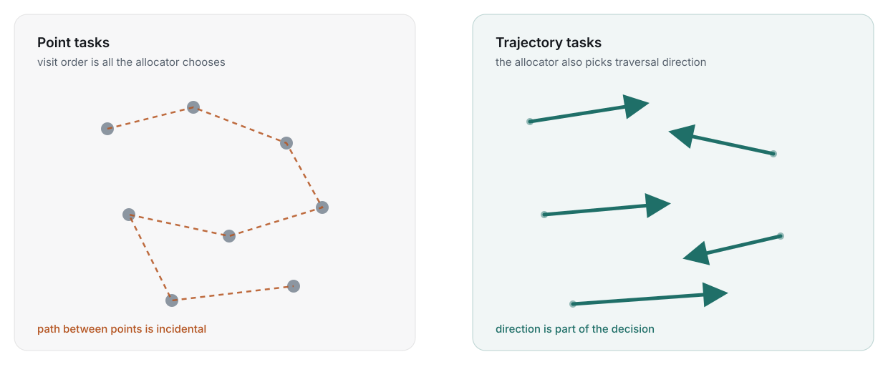

Cooperative controlof multi-robot systemsin the real world
What it takes to go from a search and rescue procedure on paper to a swarm of drones that plans, talks and searches without a server, a network, or a pilot per aircraft.
The HERD project set the frame
Human-AI collaboration: engaging and controlling swarms of robots and drones, so that one operator can direct many autonomous systems at once.
Cooperative behaviour
Several drones have to fulfil one shared mission objective, not several private ones.
From human intent to autonomous behaviour
A mission objective spoken by an operator has to become something a system can execute.
Tasks that match real procedures
Formalise and automate tasks that align with how operations are actually run, not how a benchmark says they are.
Prototypes and lab experiments
The project's technology readiness level bounds the scope. Everything here is a validated component, not a certified product.
The thread through the thesis
Every component exists because a rescue operation needed it, and each was taken outdoors at least once.
- The HERD Project: Human Multi-Robot Interaction in Search & Rescue and in Farming · Christensen et al., Human-Multi-Robot Systems Workshop, Kyoto 2022
Five pieces of one toolchain
The order follows the operation: define it, divide it, command it, connect it, then measure it.
1 · Defining SAR operations in Denmark
How the emergency agency searches today, and what a drone system must respect.
2 · Decentralized task allocation
Trajectory tasks and a consensus-based bundle algorithm that needs no coordinator.
3 · Swarm control through programming interfaces
Two declarative languages between the operator and the mission.
4 · Communication without infrastructure
SwarmTalk: broadcast messaging on €10 hardware, tested in the air.
5 · A dataset and benchmark for informed search
SAREnv: lost-person probability maps and three metrics.
6 · Other contributions
User studies, wildlife monitoring and where the work goes next.
Defining SAR operations in Denmark
Before a drone can help with a search, someone has to write down what a search is.
The quality of the search depends on the operator
A drone-assisted search today is manual coverage and point-of-interest inspection, run by two or three people under a chain of command.
- One operator pilots. Coverage is flown by hand, one aircraft at a time.
- One or two inspect video. Detection is a person watching a feed.
- A chain of command decides. New information and priorities flow through people.
- The bottleneck is human attention. How much new information an operator can absorb sets the ceiling on the search.
The finding that motivates the thesis
The quality of a search is highly dependent on the operator. Any system that helps has to reduce that dependence rather than add another screen.
Where this comes from
A field study of Danish drone-supported rescue operations with the emergency management agency, DEMA.
A search is a moving target
Four things change while the drones are in the air, and the plan has to change with them.
Search area
Grows, shrinks and moves as witnesses report and terrain is cleared.
Direction of search
Where the person was last seen and where they are likely to go decide the sweep.
Number of drones
Aircraft land to swap batteries and rejoin; the team size is never constant.
Search priority
The incident commander re-weights areas as the operation unfolds.
Completeness and redundancy are the requirement
A missed patch is a failed search. A system that is fast but leaves gaps is worse than a slow one that does not, so every method in this thesis is judged first on whether it covers everything.
The OFS method makes searches consistent
The Danish Emergency Management Agency searches in a fixed order: Overview, Focused, Systematic. We evaluated it in the field.
Overview
Get the whole area in view. Where are the roads, the water, the edges?
Focused
Inspect the points of interest the overview surfaced.
Systematic
Sweep what remains with coverage lines, so nothing is left to chance.
Where it still falls short
OFS ensures consistency over best practice. It does not make the task generation consistent: two operators given the same map still draw different lines and pick different points.
field experiments
Across four different geographical areas, with 180 simulated missing persons between them.
From OFS to tasks a drone can take
If the procedure is fixed, the tasks can be generated automatically from the environment.
Environment
The search polygon, terrain, roads, water, buildings, and the environmental features that shape where people end up.
The OFS rules
Overview becomes a perimeter pass, Focused becomes interest points, Systematic becomes coverage lines over what is left.
Tasks
Coverage lines and interest points, generated the same way every time, ready for an allocator to divide between drones.
Why this matters for everything after it
The rest of the thesis assumes tasks exist. This is where they come from, and it is why the allocator in Part two has to handle lines, not just points.
How can drones plan a search together?
The field study set the requirements: cheap, lightweight, low overhead, an ad hoc infrastructure, and complete. We do not want to miss anything.
Coverage planning assumes you know everything in advance
The strongest multi-robot coverage methods are near-optimal, centralized, and solved before take-off.
- Everything known pre-operation. Area, robots, capacities and costs are inputs to one solve.
- No on-the-fly planning. A change in the field means a new problem and a new solution from scratch.
- Near-optimal. Which is exactly why the community likes them, and why they are the benchmark to beat.
- One computer in the loop. A centralized system might not always fit a rescue operation in a forest.
Representative example
Area coverage with multiple capacity-constrained robots: an exact formulation with strong guarantees, and a planning horizon that ends before the first drone leaves the ground.
The mismatch
Part one said the search changes while flying. A plan that must be complete before take-off cannot follow it.
- Area Coverage With Multiple Capacity-Constrained Robots · Agarwal & Akella, IEEE Robotics and Automation Letters 7(2), 2022
The allocation problem, formally
Assign Na drones to Nt tasks without conflicts, maximising a global goal under a set of constraints.
maximise Σi Σj Fij(xij) the sum of every drone's local objective over the tasks it wins
subject to H each task to at most one drone, plus the operational constraints on the right
No-fly zones
Airspace the plan may not enter, however cheap the path through it would be.
Time criticality
Some areas must be searched first; the objective discounts late arrival.
Energy limits
A bundle of tasks has to fit in one battery, or it is not a valid bundle.
Single-item auctions leave capacity on the table
The current approach: tasks are points or clusters of points, auctioned one at a time.
- Points or clusters. The task model has no notion of a path, so a coverage line is a cluster of waypoints.
- One task per round. Sequential single-item auctions converge, but slowly.
- Suboptimal by design. An agent can almost always have acquired more tasks than the auction gave it.
- Strong assumptions. Communication must be complete and situational awareness must be consistent across agents before the bids mean anything.
Centralized auction
One auctioneer collects every bid and announces every winner. Simple, and a single point of failure.
Decentralized auction
Every agent is its own auctioneer and the fleet has to agree on who won. Harder, and the only kind that survives losing the ground station.
Go decentralized, and bid on bundles
Decentralized algorithms buy robustness in an unstructured environment. The consensus-based bundle algorithm, CBBA, is the one we start from.
Robust where there is no structure
No node whose loss ends the mission, in a forest with no coverage.
Less overhead
No reliance on existing infrastructure; the drones are the network.
Ad hoc re-planning
A drone that lands to swap batteries triggers a re-bid, not a restart.
Dynamic task inclusion
New tasks join the auction as the operation changes, the way Part one said it would.
CBBA in one line
Each drone greedily builds a bundle of tasks it can serve cheaply, then the fleet reaches consensus on the winning bids. Decentralized, auction based, and it considers the whole bundle while bidding rather than one task at a time.
CBBA: build a bundle, then agree
Two phases repeat until nobody's bid changes: bundle construction on each drone, consensus between them.
Bundle construction
Agent i adds task j to its bundle b and path p whenever the reward S improves. It bids the marginal gain of adding that task where it fits best in the path.
Consensus
Neighbours exchange winning bids and who holds them. A set of consensus rules resolves every conflict locally, so the fleet agrees on who is winning and what the bid is, over any communication topology that changes while flying.
The condition: diminishing marginal gain
No task added to a bundle may decrease the cost of the whole bundle. A time-discounted reward satisfies this: adding a point to a path always adds time.
Two limits
Optimality is not guaranteed. And the original is limited to point tasks, while Part one produced lines.
- Consensus-Based Decentralized Auctions for Robust Task Allocation · Choi, Brunet & How, IEEE Transactions on Robotics 25(4), 2009
Trajectories, not points
A task becomes a path between two points, and which end you start from is part of what the allocator decides.

Still satisfies diminishing marginal gain
The spatial difference between a line's start and end is what the bid scores, so CBBA's convergence carries over.
A task abstraction that generalises
Points, lines and areas (as line coverage) are all the same object to the allocator.
The price
Higher complexity, because tasks now depend on each other: the order in the path and the direction of traversal both change the cost.
- Decentralized Multi-UAV Trajectory Task Allocation in Search and Rescue Applications · Grøntved, Lundquist & Christensen, ICAR 2023, IEEE
- TrajAllocPy, the reference implementation
Within 5% of centralized, without the centre
Against a branch-and-bound MILP that knows everything in advance, the decentralized allocator gives up almost nothing.

from near-optimal
Compared with centralized branch-and-bound MILP solutions on the same benchmark problems.
Scales with robots, less so with tasks
Adding drones is cheap. Adding tasks grows the bundle search, since each line can be flown two ways and slotted anywhere in the path.
Direction is optimised, not guessed
Each line task is scored in both directions before it enters a bundle.
Swarm control through programming interfaces
Combining domain-specific knowledge with planning algorithms: two declarative languages between the operator and the mission.
Two languages between the operator and the swarm
High-level planning, automatic task generation and swarm monitoring, on top of a built-in UAV infrastructure of Gazebo, PX4 SITL and ROS.
Agent language
Describes what a drone is: its capabilities such as flight time and sensors, and the environmental conditions and limitations it operates under.
Operation language
Describes what the operator wants: tasks and constraints in the operator's own terms. It is the translation layer between a human mission objective and its execution.
Why declarative
An operator states the goal and the rules, not the flight plan. The planner from Part two fills in the rest, and the same operation file runs in simulation and on aircraft.
- Towards Autonomous Multi-UAV U-Space Operation Planning · Grøntved, Jepsen, Christensen, Jensen, Schultz Lundquist & Campusano, ICUAS 2024, IEEE
- U-space mission planning, source
Still one node holding the strings
The languages are decentralized by nature. The implementation was not, yet.
Dynamic re-planning
Handled, but governed centrally: one process re-runs the allocation.
Failure detection
Handled, but a single node watches every aircraft's heartbeat.
Communication
Handled over MAVLink, through the one node that maintains every connection.
Which sets the next requirement
The Operation language is inherently decentralized, but the solution still depends on a single node that maintains the connection using MAVLink. What is missing is a communication protocol without a single point of failure.
Communication without infrastructure
Simple broadcast messaging between aircraft, inexpensive, open source, and tested in the air.
Nothing off the shelf fit
The requirements: an ad hoc network with decentralized communication, adaptable message formats, and hardware that is open and easy to get.
MAVLink
The standard drone protocol, and it does not support ad hoc drone-to-drone communication.
MQTT and Zigbee
Both need a centralized broker or coordinator, the very node we are trying to remove.
B.A.T.M.A.N.
A real mesh protocol, but it relies on the Linux kernel, so the hardware gets expensive.
LoRa
Long range, but proprietary and with data rates too low to carry bids and positions.
So we built one
Broadcast on the data link layer, on a microcontroller that costs about ten euros, with a message format the application defines.
SwarmTalk: a €10 plug-and-play module
No central coordinator and no network configuration in advance. A commodity ESP32 broadcasting on 2.4 GHz.
Physical layer
2.4 GHz Wi-Fi radio on an off-the-shelf ESP32.
Protocol layer
ESP-NOW: lightweight, connectionless messaging on OSI layer 2. 1490-byte packets, about 372 floats each.
Application layer
A ROS 2 bridge that serialises messages to binary and back: positions, task assignments, status.
Open sourced, all of it
Firmware, example code, the ROS 2 middleware and a 3D-printable enclosure. Quick to prototype with and easy to extend.
per aircraft
The whole module. Cheap enough to put on every drone in a fleet and lose a few.
tested in the air
Successfully exchanged packets between airborne UAVs up to 1.5 km apart.
- Communication for UAV Swarms: an Open-source, Low-cost Solution Based on ESP-NOW · Grøntved, Ladig & Christensen, ICUAS 2025, IEEE
- SwarmTalk on GitHub
Tested in the air, up to 1.5 km
Two outdoor experiments with real aircraft, one for throughput at working range and one to find the edge.
packet loss at 200 to 400 m
Three UAVs at 50 to 100 m altitude, exchanging positions continuously.
packet loss out to 1,500 m
Two UAVs, packets at 2 Hz, range swept from 0 to 1.5 km.
Where it sits
Range: LoRa > SwarmTalk > Wi-Fi. Less reach than LoRa, far more data; more reach than infrastructure Wi-Fi, with no access point.
Consensus in under ten seconds, over the air
Parts two and four together: three simulated UAVs run the decentralized allocator, and every bid travels over real SwarmTalk radios.
to a conflict-free allocation
The three UAVs reached consensus on the task allocation in under ten seconds.
The radio is not the bottleneck
Throughput of 150 kbps against a theoretical maximum of 500 kbps: the allocator used about 30% of the available bandwidth.
What this closes
Slide 19 said the planner still hung off one MAVLink node. Here the same planner runs with no ground station in the loop at all: the drones bid, agree and fly on a network they carry themselves.
A platform for decentralized swarms
Commodity hardware at about €10 per aircraft, open-source firmware and middleware, and a planner that already speaks it. Enough to prototype a dynamic swarm in an afternoon.
A dataset and benchmark for informed search
In search and rescue you want to look at the right places at the right time. Until now there was no shared way to say whether a planner does.
Four hundred papers a year and no shared yardstick
The field publishes heuristics faster than it agrees on how to describe the problem or the performance.
SAR publications last year
Of which roughly a hundred are within robotic path planning.
A lot of heuristics
Spirals, lawnmowers, greedy frontiers and learned policies, each evaluated on its own map with its own metric, so none of them can be compared.
The goal is ambiguous, except for one thing
What a SAR operation optimises is debatable. Finding the lost person is not. A benchmark has to be built around that, and around where lost people actually turn out to be.
SAREnv: lost-person behaviour as a dataset
An open-source dataset and benchmark tool for informed wilderness search and rescue with UAVs, built with the University of Bristol Flight Lab.
Lost-person behaviour
Statistical models of where people are found relative to where they were last seen.
Geospatial features
Roads, water, tree cover, buildings and terrain, the features that pull a lost person one way or another.
Predefined area sizes
Scenarios at fixed extents so results are comparable between papers.
Empirical statistics
The probabilities come from real incident data, and they generate the maps a planner is scored against.
geospatial scenarios
Across four distinct European environments, each with a high-resolution probability map.
What it is for
Use statistical data to generate data for path-planning algorithms, then score any planner the same way.
- SAREnv: An Open-Source Dataset and Benchmark Tool for Informed Wilderness Search and Rescue Using UAVs · Grøntved, Jarabo-Peñas, Reid, Rolland, Watson, Richards, Bullock & Christensen, Drones 9(9):628, MDPI 2025
- SAREnv on GitHub
Two independent distributions make a probability map
Where a person is likely to be is the product of how far they tend to travel and what kind of ground they tend to end up on.
P(area) ∝ Pspatial(x, y) · Pfeature(f(x, y)) a continuous spatial probability function, times a discrete distribution over the feature under each cell, assumed statistically independent
Spatial distribution
Distance from the last known position, from lost-person statistics.
Feature distribution
How often people are found on a road, by water, in dense forest, in a building.
Three metrics for one question
Did the search look at the right places at the right time? Each metric answers a stricter version of it.
Accumulated probability of detection
How much of the probability mass the path has seen. Rewards complete coverage of likely ground.
Time-discounted probability
The same mass, discounted by when it was seen. Rewards looking in the likely places first.
Lost person discovery score
How quickly sampled lost persons, drawn from the map, are actually found. The one that reads like an operation.
Why three
A planner can score well on coverage and badly on time, or find the sampled people by luck. Reporting all three is what makes two papers comparable.
Five baselines, one benchmark
Predefined coverage patterns give every future planner something to beat, on the same maps with the same metrics.
What the comparison shows
The informed planners, those that read the probability map, separate from the uninformed patterns most on the time-discounted metric. Coverage alone hides the difference. Confirm against the results plot on source slide 41.
The benchmark is the contribution
Not the baselines' scores, but that any planner published after this can report the same three numbers on the same sixty scenarios.
Contributions and where this goes
Six peer-reviewed papers, a handful of side quests, and the questions the thesis leaves open.
Six peer-reviewed papers
One per component, plus the project paper that started it.
The HERD project
Human multi-robot interaction in search and rescue and in farming. Christensen, Grøntved et al., Human-Multi-Robot Systems Workshop, Kyoto 2022.
Automated task generation
For multi-drone search and rescue operations. Grøntved, Christensen & Bahodi, DCAI 2025, Springer.
Trajectory task allocation
Decentralized multi-UAV trajectory task allocation in search and rescue applications. Grøntved, Lundquist & Christensen, ICAR 2023, IEEE.
U-space operation planning
Towards autonomous multi-UAV U-space operation planning. Grøntved, Jepsen, Christensen, Jensen, Schultz Lundquist & Campusano, ICUAS 2024, IEEE.
Communication for UAV swarms
An open-source, low-cost solution based on ESP-NOW. Grøntved, Ladig & Christensen, ICUAS 2025, IEEE.
SAREnv
An open-source dataset and benchmark tool for informed wilderness search and rescue using UAVs. Grøntved, Jarabo-Peñas, Reid, Rolland, Watson, Richards, Bullock & Christensen, Drones 9(9), MDPI 2025.
- The HERD Project: Human Multi-Robot Interaction in Search & Rescue and in Farming · Christensen et al., HMRS Workshop 2022
- Automated Task Generation for Multi-Drone Search and Rescue Operations · DCAI 2025
- Decentralized Multi-UAV Trajectory Task Allocation in Search and Rescue Applications · ICAR 2023
- Towards Autonomous Multi-UAV U-Space Operation Planning · ICUAS 2024
- Communication for UAV Swarms: an Open-source, Low-cost Solution Based on ESP-NOW · ICUAS 2025
- SAREnv: An Open-Source Dataset and Benchmark Tool for Informed Wilderness Search and Rescue Using UAVs · Drones 2025
Side quests that fed back in
User studies with rescue operators, and the same swarm tools pointed at animals and volcanoes.
Human-swarm interaction in search and rescue
Drone swarms to support search and rescue operations: opportunities and challenges (Cultural Robotics, Springer 2023). Before it falls: supporting drone fleet management through battery visualisations (INTERACT 2025).
Wildlife and environmental monitoring
Drone swarms for animal monitoring: multi-perspective data collection (IMAV 2024) and field trials on large mammals (PAAMS 2025). Autonomous UAV volcanic plume sampling based on machine vision and path planning (ICUAS 2024).
Why they belong in a SAR thesis
Every one of them exercised the same toolchain: TrajGenPy for paths, TrajAllocPy for allocation, SwarmTalk in the air. A zebra herd and a volcanic plume are search problems with a different target.
- Drone Swarms to Support Search and Rescue Operations: Opportunities and Challenges · Hoang et al., Cultural Robotics, Springer 2023
- Before It Falls: Supporting Drone Fleet Management Through Battery Visualizations · Bahodi, Lau, van Berkel, Grøntved, Skov & Merritt, INTERACT 2025
- Drone Swarms for Animal Monitoring: A Method for Collecting High-Quality Multi-Perspective Data · Rolland et al., IMAV 2024
- Drone Swarms for Multi-Perspective Monitoring of Large Mammals in their Natural Habitats: Deployment and Field Trials · Rolland et al., PAAMS 2025
- Autonomous UAV Volcanic Plume Sampling Based on Machine Vision and Path Planning · Rolland, Grøntved, Christensen, Watson & Richardson, ICUAS 2024
Bridging theory and real-world SAR operations
Decentralized cooperative control can be realised in operational UAV systems. The thesis delivers the components of a complete toolchain to do it, each open source.
Trajectory-based CBBA
Decentralized task allocation over lines and areas, within 5% of centralized optima.
Infrastructure-less communication
On physical platforms, at €10 per aircraft, consensus over the air in under ten seconds.
Domain-aware planning and evaluation
Task generation from the OFS procedure, path generation, and a benchmark built on lost-person behaviour.
An operator-centric language
Operations described in the operator's terms, executed by the planner.
Key results
Robust methods for autonomous, cooperative multi-UAV search and rescue. A standardised evaluation framework that makes the research reproducible and comparable. And an open-source release of every tool and dataset, so the next validation can happen in the field rather than the lab.
Is search and rescue trivial now? No.
Four directions, in the order the emergency agency would ask for them.
Real-world end-to-end tests
Close collaboration with DEMA is still needed to validate the methods on live operations. Interaction with the humans running them is what decides whether the technology is adopted.
Dynamic and reactive planning
From static to dynamic task models: moving targets, evolving uncertainty, even patrolling. Reactive planning for time-critical search, where the human and the UAV plan together.
Heterogeneous teams
Mixed teams of UAVs, ground units and manned aircraft, with communication and allocation protocols that understand different capabilities.
Interaction and learning
LLM agents for natural, adaptive mission specification and operator control. SAREnv's metrics as a training signal for learned search strategies.
The one to start with
End-to-end field tests with the agency. Every other item on this slide is easier to justify once a real operation has run on the toolchain.
Backup slides
Detail for questions: the volcano, the zebras, the interface work, and the coverage problem after this one.
Volcanic plume interception
The swarm tooling pointed at a plume instead of a person: machine vision finds it, path planning flies through it.
- Software-in-the-loop in a container. VS Code workspaces wrap Gazebo and PX4 so a realistic flight-dynamics simulation starts with one command.
- Fast prototyping. The same workspace ran the plume-interception controller before it flew.
- YOLOv8 for detection. The plume is a visual target; the interception path is planned from the detection.
Monitoring a herd is an art-gallery problem
Monitor as many surfaces as possible using the fewest resources.
The optimisation
Treat every animal as a Lambertian surface and maximise the radiated "light" of the entire herd of zebras that the cameras collect. Camera placement becomes a guarding problem over moving surfaces.
Why it is the same toolchain
Viewpoints are tasks, the herd is the search area, and the drones allocate them between themselves the way they allocate coverage lines.
- Drone Swarms for Animal Monitoring: A Method for Collecting High-Quality Multi-Perspective Data · Rolland et al., IMAV 2024
- Drone Swarms for Multi-Perspective Monitoring of Large Mammals in their Natural Habitats: Deployment and Field Trials · Rolland et al., PAAMS 2025, Springer
Situational awareness for the operator
The operator from slide 5 is still there. The interface work is about what they see.
UI components
Fleet state, task state and battery state in one view rather than one tablet per aircraft.
Notifications
The system raises what changed; the operator does not have to poll.
Improved human situational awareness
Measured in user studies with operators, not assumed.
- Before It Falls: Supporting Drone Fleet Management Through Battery Visualizations · Bahodi, Lau, van Berkel, Grøntved, Skov & Merritt, INTERACT 2025
Probabilistic multi-agent coverage
Cover a known area, distributing the agents most effectively given a distribution of known priors.
- Operator in the loop. Change the mission parameters while flying: priorities, focus of search.
- A dynamic environment. The map changes and the plan follows.
- Multi-agent reinforcement learning. Long-term coordination learned rather than scripted.
Open questions
How to represent the environment to a learner, how to model the other agents, and what SAREnv's metrics look like as a reward.